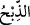

“Biz, oğluna bedel, ona büyük” cüsseli, semiz “bir kurban verdik.”
Yapmakla memur olduğu iş (kurban), damarı yarıp kan akıtmakla tamam olur. “
kesilecek hayvanın ismidir, yani kurbandır. Buna göre mânâ şöyledir: İsmail (a.s.)’ın
yerine fidye olarak bir kurban kıldık ve onu bu şekilde kesilmekten, kurban edilmekten
kurtardık. Ancak fidyeyi veren ve uygulanmasını emreden Allah Teâlâ olduğu için
mecaz olarak “Biz, oğluna bedel ona büyük bir kurban verdik.” buyrulmuştur.
Kurbanda sünnet olan da kurbanın semiz ve besili olmasıdır. Hz. Peygamber (s.a.) şöyle
buyurmuştur: “Kurbanlarınızı semiz ve besili yapınız. Zira onlar sizin sırat üzerinde
bineklerinizdir.”[214] Yahut bu kurbanın kadri ve kıymeti pek yücedir. Zira Allah Teâlâ
bu kurbanı bütün resul ve nebilerin efendisi kendi neslinden olan İbrahim peygamberin
oğlu İsmail peygamber için fidye olarak göndermektedir.
et-Te’vîlâtü’n-Necmiyye’de der ki: burada fidye olarak gönderilen kurban biri
diğerinden büyük olan iki büyük peygambere fidye olduğu için “büyük kurban” olarak
nitelendirilmiştir. Bu peygamberler İsmail (a.s.) ve Muhammed (s.a.)’dir. Zira
Muhammed (s.a.) İsmail (a.s.)’ın sulbündendir.
el-Es’iletü’l-hikem’de büyükbaş hayvan, kurban konusunda koçtan daha büyük olduğu
halde -ki bir büyükbaş hayvan yedi koç yerine kâim olur- Allah Teâlâ neden bu koç
kurbanı büyük kurban diye nitelemiştir? diye sorulursa, cevabı şudur: Koç ile Allah’ta
fâni olan müslüman nefis arasında pek kuvvetli bir münasebet vardır. Zira koç, sırf
kurban için kesilmeye müsait olarak yaratılmıştır. İşte koç küllî fâniliğin, teslim ve
boyun eğmenin sembolü olduğu gibi ahirette de ölümün sembol sûreti olarak sırat
köprüsü üzerinde kurban edilecektir. İşte bu mânâdan dolayı Allah Teâlâ koça “büyük
kurban” demiştir. Zira her şeyin fazilet ve üstünlüğü sûret ile değil mânâ iledir. Çünkü
sûretin üstünlüğü mânânın üstünlüğüne tâbidir. Deve böyle değildir. Çünkü ondan esas
maksut binit olarak kullanılması ve yüklerin taşınmasıdır. Denilir ki fidye olarak
gönderilen bu koç cennetten gönderilmiştir.
İbn Abbâs (r.a.)’dan rivâyete göre bu koç Âdem (a.s.)’ın oğlu Hâbil’in kurbanıdır.
Allah Teâlâ onun kurbanını kabul etmiştir. O cennette otluyordu. Allah Teâlâ onu İsmail
(a.s.)’a fidye olarak gönderdi. Buna göre o devirde kurbanın kabulü mânâsında gökten
inen ateş o kurbanı yakmamış bilakis göğe kaldırmıştır. İnsânü’l-uyûn’da der ki,
bazılarının gökten gelen ateş o kurbanı yaktı (yedi) sözü tartışmalı bir sözdür. Yine
mânâlar tecessüm ettiği gibi ruh da tecessüm eder ve ebedi olarak öyle kalır. Buna göre
Hâbil’in zamanında gökten inen ateşin o kurbanı yakıp yemesi ikinci defa İbrahim
(a.s.)’ın onu kurban etmesine engel değildir.
Rivâyete göre koç Mina’da cemre yanında İbrahim (a.s.)’dan kaçtı. İbrahim (a.s.)
koçu yakalamak için ona yedi taş attı. Taşlama bundan dolayı sünnet oldu. Yine yukarıda
geçtiği gibi İbrahim (a.s.) oğlunu kurban edeceği sırada şeytan karşısına çıkıp ona
vesvese vermek istedi. İbrahim (a.s.) şeytanı taşlayarak kovdu. Şeytan taşlama
ameliyesi bundan dolayı hacılara vacip oldu.